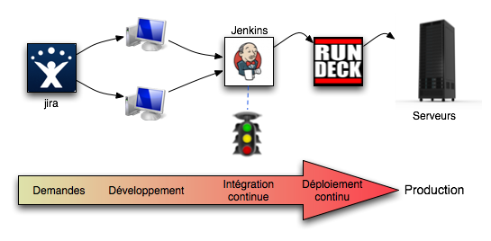

Intégration continue
L'intégration logicielle est l'action qui consiste à faire un build prêt pour la production.
Selon les projets et les pratiques, selon varie de quelques secondes à plusieurs jours.
Si une erreur est détectée pendant l'intégration, le coût peut donc être lourd.
En cas de bug en production, une intégration lente empêche une correction rapide.
On recommande donc une intégration courte et automatisable.
Sur des projets maven, cela se résume à une commande :
mvn package
Mais sur des projets complexes avec de multiples modules, on tend toujours vers une augmentation de la durée.
L'intégration continue est une pratique mise en avant par les méthodologies agiles.
Le principe est de réaliser des intégrations aussi fréquemment que possible. la fluidité du process est une obsession des méthodologies agiles.
La fréquence optimale est de déclencher l'intégration après chaque modification des sources.
Le but est de détecter l'apparition d'anomalies le plus tôt possible.
Diverses métriques sur la qualité du code peuvent être produites lors de l'intégration. Elles visent à l'amélioration continue du code.
If it hurts, do it more often (Kent Beck)
http://martinfowler.com/articles/continuousIntegration.html
Les bénéfices de l'intégration continue sont multiples :
Un indicateur de santé de l'intégration continue est souvent installé au sein des équipes.
Voici quelques pratiques associées à l'intégration continue:
Cette liste n'est pas exhaustive mais définit un état d'esprit lié au build.
Si on intègre en continu, pourquoi ne pas déployer en continu ?
C'est une mouvance relativement récente mais qui gagne en popularité.
Voici la chaîne en place chez RTL net :
